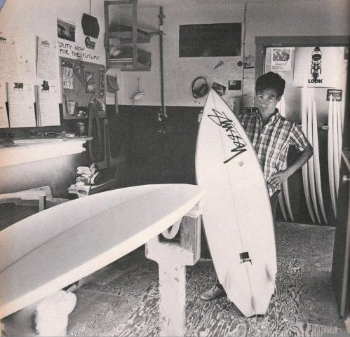
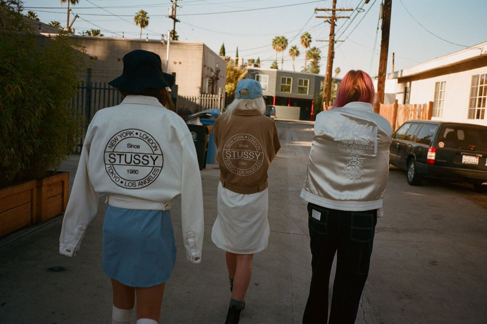

Stüssy: El Surf que Conquistó la Moda Urbana
Año de fundación: 1980 (Laguna Beach, California)
Fundador: Shawn Stussy
De tablas a remeras
Stüssy nació casi por accidente: Shawn firmaba sus tablas de surf con un garabato que pronto estampó en camisetas para venderlas en la playa. Aquellas prendas resonaron con la cultura skate y punk californiana, y así surgió uno de los primeros labels que fusionó deporte, música y arte callejero.
Años 90: Globalización DIY
La marca viajó con músicos de gira y repartidores de discos, creando “tribus” antes de que existieran las redes sociales. Su modelo de distribución selectiva —“chapter stores” en ciudades‑clave— introdujo la lógica del hype: escasez, colaboraciones artísticas y lanzamientos sorpresa.
Legado
Stüssy fijó las coordenadas del streetwear moderno: logos audaces, inspiración subcultural y colaboraciones tempranas con Nike, Dover Street Market y artistas como Futura. Hoy, la firma sigue dictando tendencias con cápsulas nostálgicas que reeditan sus gráficos ochenteros.
Fecha de Publicación: 02/06/2025